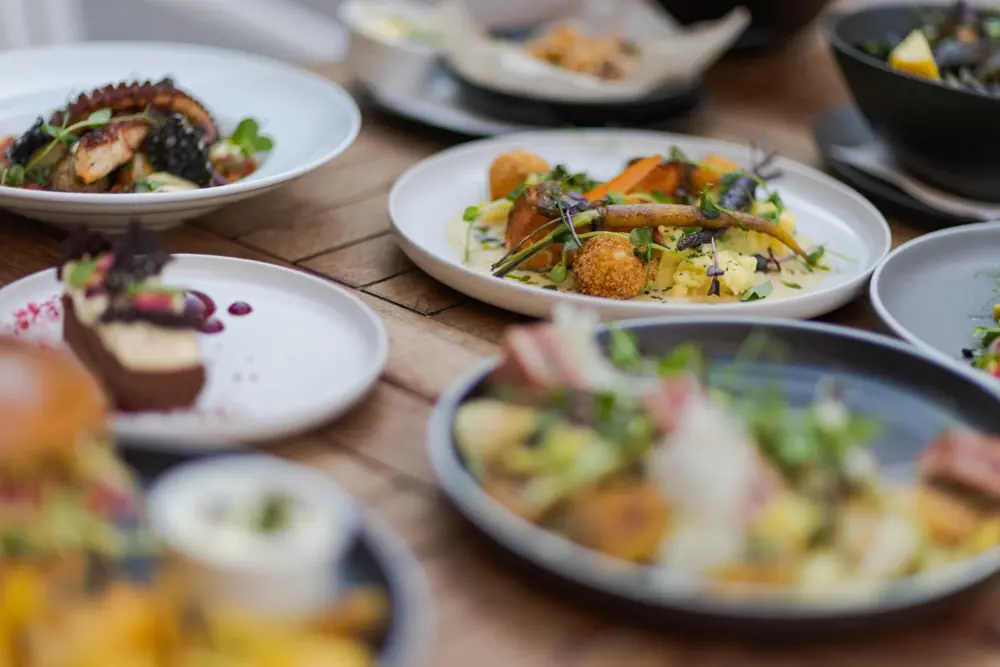

Menu: ryby, plody mora a šaláty
Wolt · 28. 9. 2026Od lososového tatáraku po grilovanú chobotnicu. Jedlá, prílohy, pivo aj víno sú prepísané z ponuky reštaurácie na Wolte — s gramážou aj číslami alergénov.

| Oddiel | Položka | Na tanieri | Gramáž · alergény | Cena |
|---|---|---|---|---|
| Predjedlá | Lososový tatarák | citrusový crème fraîche, pažítka, uhorka | 80 g · A 1, 4, 7 | 12,45 € |
| Tuniakové carpaccio | tuniakový dresing, sušené cherry paradajky, kapary, parmezán, bageta s bylinkovým maslom | 90 g / 70 g · A 1, 3, 4, 7, 10 | 12,95 € | |
| Grundle Pána Rybu | cesnaková mayo | 100 g / 50 g · A 1, 3, 4, 10 | 10,45 € | |
| Snack kalamáre | cesnaková mayo | 100 g / 50 g · A 1, 3, 4, 10 | 10,45 € | |
| Hlavné jedlá | Grilovaný losos | zemiaková kaša s pažítkou, parmezánové krokety, glazovaná baby mrkva, beurre blanc s citrónovou trávou | 150 g / 250 g · A 4, 7, 9 | 18,95 € |
| Paprikáš zo sumca | s maslovými haluškami, slaninou, kyslou smotanou | 500 g · A 1, 3, 4, 7, 9 | 17,95 € | |
| Hráškové risotto | s krémovou ricottou, pistáciami a mätou, filet pražma / morský vlk / losos | 300 g / 100 g · A 4, 7, 8, 9, 12 | 20,95 € | |
| Linguine allo scoglio | krevety, kalamáre, slávky, vongole | 400 g · A 1, 2, 4, 12, 14 | 19,95 € | |
| Grilovaná chobotnica | konfitované baby zemiaky s cesnakom a tymiánom, paradajková salsa, zelené olivy, citrónová aioli, sépiový tapiokový chips | 80 g / 250 g · A 3, 10, 14 | 25,45 € | |
| Pečená treska v papieri | so zemiakmi, cherry paradajky, kalamata olivy, veloute omáčka | 150 g / 200 g · A 4, 7, 9 | 17,95 € | |
| Slávky na smotane | so šalotkou, stopkovým zelerom, cesnakom, bielym vínom a pečivom | 300 g / 100 g · A 1, 4, 7, 9, 12, 14 | 16,95 € | |
| Steak z tuniaka | grenaille zemiaky so sójovou omáčkou a jarnou cibuľkou, grilovaný pak choi, mangová salsa, avokádová majonéza, ryžový chips | 150 g / 250 g · A 3, 4, 7, 10 | 25,45 € | |
| Šaláty | Grilovaná chobotnica | mix šalát s limetkovo-zázvorovým dresingom, mangová salsa s koriandrom a chilli, kimchi reďkovka, pražené kešu, mrvenička z cesnakovej bagety | 350 g · A 1, 4, 6, 8, 14 | 19,95 € |
| Caesar šalát s krevetami | parmezán, slaninový chips a cesnaková bagetka | 350 g · A 1, 2, 3, 4, 7, 10 | 17,95 € |
Prílohy a omáčky
| Zemiaková kaša | 150 g · A 7 | 3,95 € |
|---|---|---|
| Batátové hranolky | 150 g | 4,95 € |
| Domáci kečup | 50 g · A 12 | 2,15 € |
| Domáca tatárska omáčka | 50 g · A 3, 10 | 2,15 € |
| Domáca chilli paradajková salsa | 50 g · A 2, 4, 6, 9, 12, 14 | 2,15 € |
| Domáca veloute omáčka | 50 g · A 2, 4, 7, 9, 14 | 2,15 € |
| Domáca sweet chilli omáčka | 60 g | 2,15 € |
| Cesnaková mayo | 60 g · A 3, 7, 10 | 2,15 € |
Pivo remeselné
| Jozefova desinka na osvieženie 10° | 0,33 l | 4,55 € |
|---|---|---|
| Na cisára pána (Franca Jozefa) 12° | 0,33 l | 4,55 € |
| Rudyho záletnícka IPA 15° | 0,33 l | 4,95 € |
| Terkin tmavý dúšok 13° | 0,33 l | 4,95 € |
Víno 20 vín · fľaše 0,75 lVínna karta
House Wine Berta Pinot Grisbiele perlivé polosuché21,95 €
Velkeer Sauvignon Blanc 2023biele akostné suché23,95 €
Berta Rizling Vlašský Single Vineyard 2022biele akostné suché26,95 €
Vins Winery Pálava 2022biele akostné suché31,95 €
Chateau Rúbaň Milia 2023biele akostné polosladké31,95 €
Mrva & Stanko Tramín červený 2021biele akostné polosuché31,95 €
Domaine Wachau Grüner Veltliner Federspiel 2023biele suché26,95 €
Masi Modello Pinot Grigio 2023biele suché23,95 €
Saint Clair Sauvignon Blanc 2022biele suché31,95 €
Schumann-Nagler Riesling „Hammer“ 2022biele suché26,95 €
Berta Cabernet Sauvignon Roséružové akostné suché26,95 €
Velkeer Tri Ruže Cuvée 2023ružové polosuché23,95 €
Elixir Provence AOC Rosé 2023ružové suché31,95 €
Velkeer Dunajčervené akostné suché31,95 €
Castello di Quercetto Chianti DOC 2022červené suché23,95 €
Kaiken Malbec 2020červené suché23,95 €
Soligo Prosecco DOC Brutšumivé25,95 €
Contarini Prosecco di Valdobbiadene Superiorešumivé extra suché31,95 €
Castillo Perelada Cava Stars Brut Naturešumivé31,95 €
Chateau Rúbaň Sekt Brutšumivé37,95 €
Ceny podľa ponuky na Wolt/bistro.sk — sú rozvozové, v reštaurácii sa môžu líšiť. Stav k 28. 9. 2026; A = alergény.Pán Ryba na Wolte